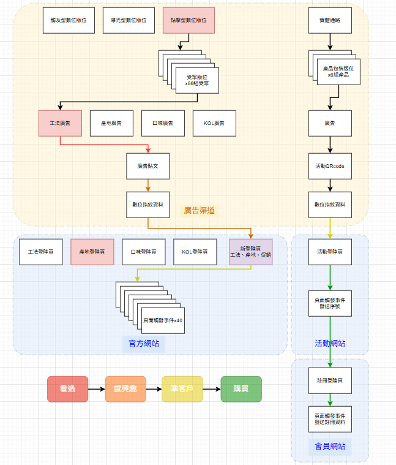
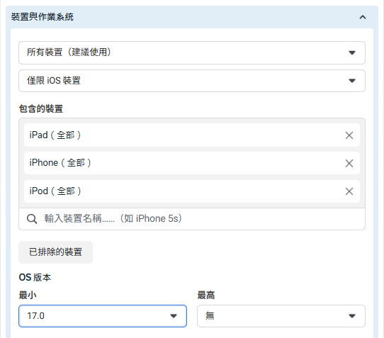
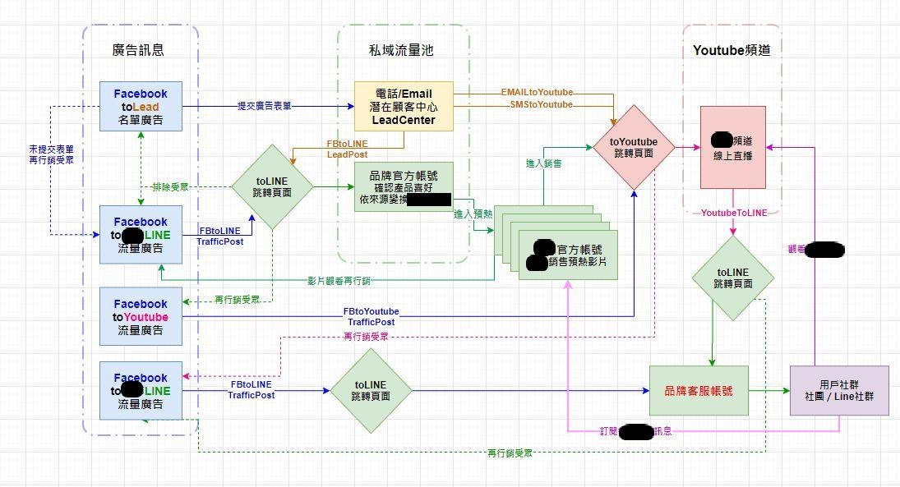
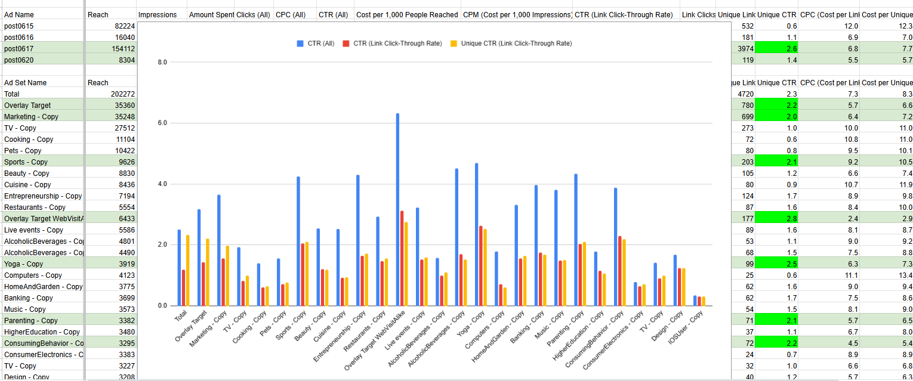
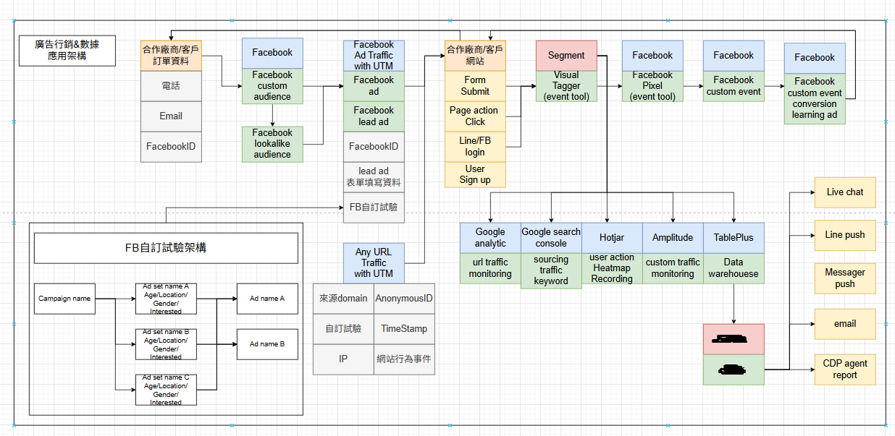

📊 完整跨域追蹤漏斗架構

🎯 漏斗架構圖：LINE/CRM整合作為再行銷漏斗延伸出海口，實現線上線下數據打通
🎯 核心問題解答
Q: 什麼是封閉式再行銷？
封閉式再行銷是透過白名單篩選高品質流量，建立封閉式導流機制，結合UTM逆向追蹤實現精準受眾定向的Meta廣告策略。相較於開放式廣告投放，能有效提升轉換率並降低獲客成本。
Q: UTM逆向追蹤如何運作？
UTM逆向追蹤透過在廣告組合中編入特定UTM參數，當用戶點擊廣告進入網站後，可根據UTM參數反向追查該用戶的廣告來源屬性，進而優化最有效的廣告組合配置。
Q: CAPI 2.0與Pixel有何差異？
CAPI 2.0是伺服器端追蹤技術，能繞過瀏覽器限制直接向Meta發送轉換資料，相較於依賴瀏覽器的Pixel，具有更高的追蹤準確度和隱私合規性。
🎯 策略一：白名單封閉導流機制
高品質流量篩選與白名單建構
🔍 實施要點
- 設備篩選：排除模擬器和低版本系統設備
- 地理位置：精準定位高消費能力區域
- 行為模式：基於過往互動數據建立白名單
- 時間控制：避開低轉換時段投放

💡 設備篩選實戰：通過作業系統版本限制提升流量品質
🔍 策略二：UTM逆向追蹤技術實作
跨平台數據溯源與廣告組合優化

🎯 跨域追蹤完整流程：從廣告點擊到最終轉換的數據溯源路徑
73%
追蹤準確度提升
資料來源：Meta官方CAPI整合案例研究 2024
🛠️ UTM參數設計策略
- Campaign：廣告系列標識碼（如：remarketingQ1_2025）
- Source：流量來源標記（如：facebook, instagram）
- Medium：廣告媒介類型（如：cpc, display, video）
- Content：廣告內容變數（如：creativeA, audienceB）
- Term：關鍵字或受眾描述（如：lookalike_buyers）

🔧 UTM實戰應用：廣告組合編碼與反向追查技術
🎯 策略三：意圖分層與受眾精準定向
高意圖表單 vs. 廣播式引流差異化策略

🎯 意圖分層策略：高意圖vs.廣播式引流的漏斗差異
📋 意圖分層框架
- 高意圖層（Hot）：已瀏覽產品頁、加入購物車、開始結帳流程
- 中意圖層（Warm）：瀏覽特定內容、下載資源、觀看影片50%+
- 低意圖層（Cold）：網站訪客、粉絲專頁互動、類似受眾
- 排除層（Exclude）：已購買客戶、低品質流量、競爭對手
🏆 成功案例：Castlery傢俱品牌意圖分層優化
透過建立四層意圖分層系統，Castlery將再行銷廣告的轉換率提升65%，並將獲客成本降低42%。高意圖層採用產品再行銷廣告，中意圖層使用內容行銷引導，低意圖層則以品牌認知為主要目標。
👥 策略四：用戶行為分析與受眾建構
基於行為數據的精準受眾系統

📈 用戶行為分析：基於數據建立精準再行銷受眾
🔬 行為追蹤維度
- 頁面互動：停留時間、滾動深度、點擊熱區分析
- 產品關注：商品瀏覽次數、收藏行為、比較功能使用
- 購買路徑：加購物車、優惠券使用、付款方式選擇
- 內容偏好：文章閱讀、影片觀看、下載行為
- 時間模式：訪問頻率、活躍時段、季節性行為
🔧 CAPI 2.0伺服器端追蹤整合
突破隱私限制的技術解決方案
+23%
額外轉換量追蹤
資料來源：Meta官方案例 - 汽車品牌CAPI整合效果
🎯 CAPI整合優勢
- 追蹤準確度：不受瀏覽器限制，直接從伺服器發送數據
- 隱私合規：符合iOS 14.5+和GDPR要求
- 數據完整性：結合Pixel實現雙重追蹤機制
- 事件匹配：提升EMQ（事件匹配品質）分數
💬 私訊誘導與高轉換互動策略
Messenger驅動的轉換漏斗
🎯 私訊誘導技巧
- 內容誘餌：限時優惠、獨家資源、個人化諮詢
- CTA設計："私訊了解更多"、"即時客服諮詢"
- 自動回覆：設計多層次對話流程引導轉換
- 人工接手：關鍵時刻由真人客服跟進
🏆 成功案例：電商品牌私訊轉換系統
某電商品牌透過私訊誘導策略，將Facebook廣告的轉換率從2.3%提升至7.8%，平均客單價增加35%。關鍵在於建立多階段的Messenger對話流程，並在適當時機提供個人化優惠。
🌐 跨平台數據整合與歸因分析
全通路歸因與數據打通
📊 整合要點
- GA4整合：建立跨平台轉換歸因模型
- CRM連接：線下轉換數據回傳Meta
- LINE整合：私域流量再行銷系統
- Email行銷：多觸點培育機制
⚠️ 實戰應用與風險控管策略
合規操作與效果最大化
🚨 風險控管要點
- 政策合規：嚴格遵守Meta廣告政策避免帳戶風險
- 數據隱私：確保用戶數據處理符合隱私法規
- 頻次控制：避免過度曝光造成用戶反感
- 預算分配：建立風險分散的投放組合